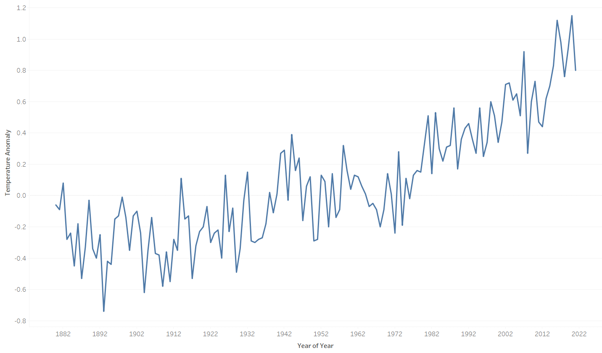

Climate Change Visualization
The 20th century saw an unprecedented rise in industrialization of soceities; thus, an exponential increase in greenhouse gas emmisions. Greater access to power has improved the lives of an unfathomable number of the worlds population. Yet, this is not without a cost.
From average temperature data each year, ranging from 1880 to 2021, we can see that anomalies from the 20th century average have progressively become more positive, more frequently. Continued increase in global temperature will lead to aggressively changing climates in all regions of the world, facilitating greater droughts and extreme weather events, resulting in mass forced migration between regions and greater instability.
Each of these images are static currently, the final product will contain a interactive visual where when a year/mark is selected on the CO2 emmisions chart, the temperature anomaly value will display for that year
History of Solar Power Consumption
The USA has re-joined the Paris Climate Accord and is beginning to push in the right direction when it comes to green electricity production. The state of Washington is a leader in the Lower 48 when it comes to producing electricity from green sources, with the vast majority stemming from hydroelectric dams. However, there is still around 20% from coal and gas fired power plants and the aim should be to eliminate this completely. Further construction of dams is not always feasible due to the destruction of habitat for animals and displacement of people.

Washington only uses a fraction of the total energy it could harvest directly from the Sun, the following data will show that it is possible for the production capacity from coal and gas to be entirely replaced with solar photovoltaics, allowing WA to produce all electricity from sustainable sources.
A visual of current solar power output and the areas the solar plants reside will finish off this section.
The Solar Resource in Washington State
A major challenge of relying on solar energy in WA is that the bulk of the energy is consumed in densely populated Western Washington, known for having overcast weather for half of the year. Solar irradation is rather abundant in Eastern WA. This presents an opportunity of powering Eastern WA communities, while also sending energy over the cascade mountain range to Western WA.
Fortunately, the infrastructure to supply Western WA with energy produced in Eastern WA is largely already in place. In fact, Eastern WA already supplies hydroelectric power throughout WA, 10 other states, and Canada.
The following visualization shows the population distribution in WA and the available solar insolation for a typical year.

Solar Panels work better on cold days with a lot of sun what does washington look like throughout the year in terms of sun vs weather with length of day taken into account
Visual
Do we believe that solar panels are feasible in washington state????
Look into future